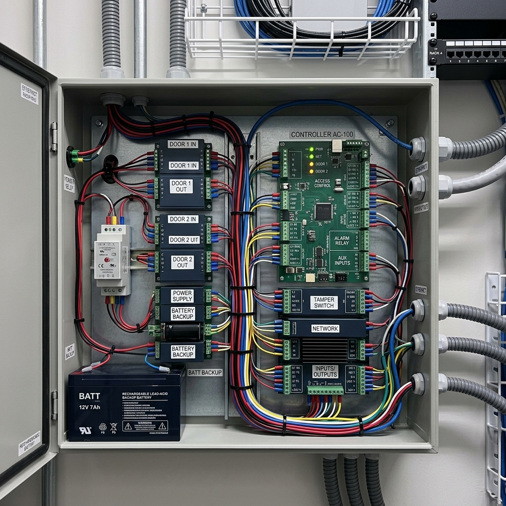

1. The components that make up a door access system
A card access system has four physical components working together. Understanding each one is what lets you ask the right questions when you are specifying or reviewing a system.
The card or credential. The most common type in Singapore commercial premises is a 13.56 MHz MIFARE card — the white or branded proximity card most office workers carry. The card contains a unique ID that it broadcasts when brought close to a reader. The card itself does not store access permissions — it only stores an ID number. The decision about whether that ID is allowed through the door is made elsewhere.
The reader. The device mounted on the wall beside the door. It reads the card's ID and passes it to the controller. Readers vary in read range (typically 3 to 10cm), in what they can read (card only, biometrics), and in how they communicate (Wiegand vs OSDP).
The controller. The brain of the system. It receives the card ID from the reader, looks it up against an access database, checks time restrictions, and sends a signal to the lock. The controller is typically installed in a secured location like a server room or electrical riser.
The lock. The physical mechanism that secures the door. Common types in Singapore include electromagnetic locks (EM locks), which release when power is cut, and electric strikes. The choice between fail-secure and fail-safe is critical.
The card does not grant access. The controller grants access based on the card ID. This distinction matters when diagnosing problems — a card that stops working is usually a database or permission issue, not a card hardware failure.
2. The Wiegand protocol and why it matters
Most card access readers in Singapore still use Wiegand to communicate with controllers. Wiegand is a simple, reliable, decades-old protocol that sends the card ID as a stream of pulses down a cable. Its main limitation is that it transmits data unencrypted and in one direction only.
This creates two practical issues. First, the card ID can be intercepted and cloned by someone with the right equipment. Second, Wiegand gives the controller no way to confirm the reader is legitimate. OSDP (Open Supervised Device Protocol) is the modern replacement—it is encrypted, bidirectional, and allows the controller to supervise the reader.
For most Singapore office premises, Wiegand remains the practical standard, but for government or data centres, OSDP is essential.
3. Fail-safe vs fail-secure — the decision that matters most
This is the most important design decision in a door access system and the one most often made without proper consideration.
Fail-safe means the lock releases when power is cut. The door opens. This is required by fire safety regulations for emergency exit doors. EM locks are inherently fail-safe.
Fail-secure means the lock remains locked when power is cut. The door stays closed. This is appropriate for server rooms or high-security areas where preserving the perimeter is the priority.
Every door in your system needs a conscious fail-state decision. The wrong choice can mean a security breach during a power failure or, more critically, a fire safety violation. The Singapore Fire Code has specific requirements about egress doors that must be fail-safe.
4. Standalone vs networked systems
Standalone systems have the controller built into the reader. Each door is independent. Adding a card means programming it at each door. Networked systems connect all controllers back to a central server. All cards are managed from a single interface, and access logs are centralised.
For any installation of more than five doors, a networked system is the correct specification. The additional cost is recovered immediately in administration time.

A well-organized access control panel — the backbone of any networked system.
5. Biometrics — when to add them and when not to
Fingerprint readers and facial recognition solve a specific problem: cards can be shared or borrowed, biometrics cannot. If your concern is unauthorised credential sharing, biometrics are the answer.
- Fingerprint. Reliable but has hygiene concerns for some. Theoretical 1-3% failure rate for certain populations.
- Facial Recognition. High throughput and contactless. Higher hardware cost but premium experience.
Do not add biometrics because they look modern. Add them if you have identified a specific problem — shared cards or high-security zones — that biometrics solve better than alternatives. Card plus PIN remains the best balance for most offices.
6. What a well-specified system looks like
When reviewing a system, the specification should include:
- A door-by-door schedule with lock types and fail-state decisions
- Confirmation of fire code compliance for all egress doors
- The communication protocol (Wiegand or OSDP)
- Whether the system is standalone or networked
- Integration with CCTV systems
BOTTOM LINE: Card access mistakes are almost always design mistakes, not technology failures. Get the design right first, then the equipment choice is straightforward.

About the Author
Ler Wee Meng is the Founder and CEO of Securevision. He holds a Bachelor of Engineering (Electrical and Electronic) from the National University of Singapore and a Bachelor of Laws from the University of London. With over 37 years of experience in the security industry, he has personally overseen the design and implementation of security systems for more than 1,000 sites across Singapore, ranging from Good Class Bungalows (GCBs) and large-scale condominiums to industrial complexes and institutional facilities.
He is the principal architect of the Securevision SECURE™ Framework and spearheaded the development of the VESTA integration platform. His direct field experience across thousands of residential units ensures that every system designed by Securevision is practical, maintainable, and built to withstand the unique technical challenges of Singapore's climate and regulatory landscape. His engineering-first approach continues to define the standards for intelligent security integration in Singapore.